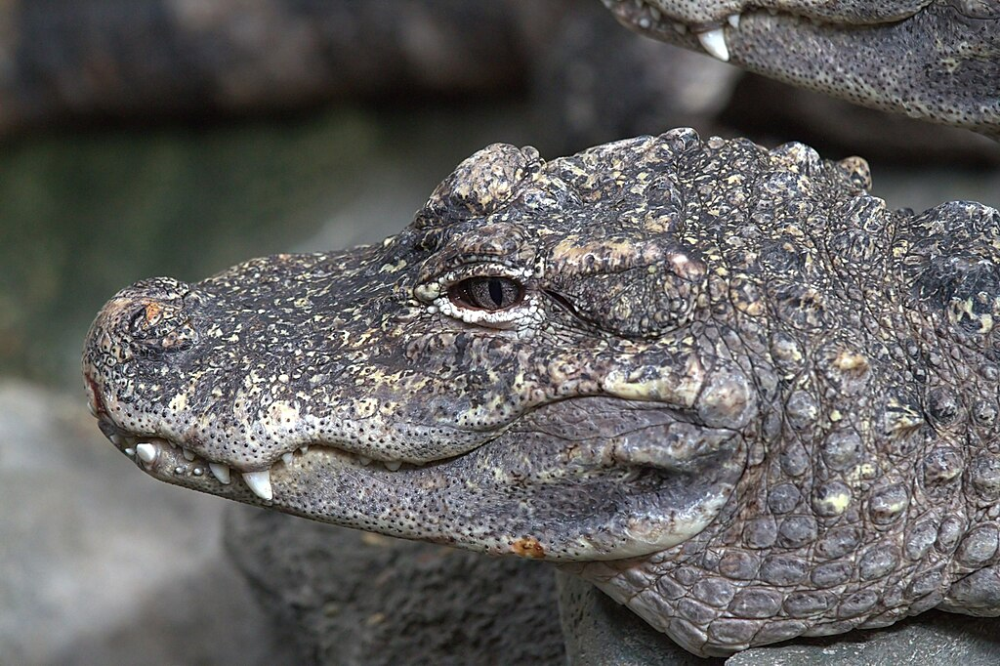
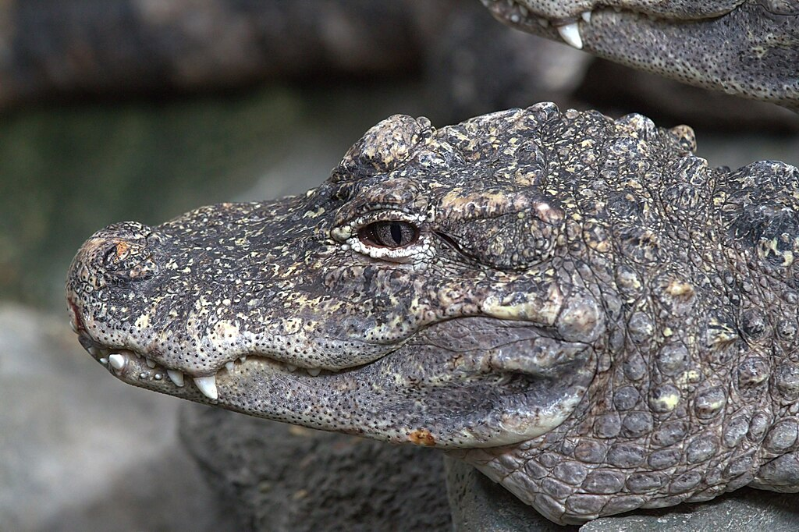

BIODIVERSITY RICH AREA...
China is among the 12 mega-biodiverse countries in the world. Forest cover accounts for 20.36% of the total land area, while the stock volume of forest plantations may be the largest in the world, harboring abundant and diverse wildlife.
>> learn moreEXPLORE THE INTERESTING ANIMALS
The Giant Panda
The panda, with its distinctive black and white coat, is adored by the world and considered a national treasure in China. Pandas live mainly in temperate forests high in the mountains of southwest China, where they subsist almost entirely on bamboo. They must eat around 26 to 84 pounds of it every day, depending on what part of the bamboo they are eating. They use their enlarged wrist bones that function as opposable thumbs. A newborn panda is about the size of a stick of butter—about 1/900th the size of its mother—but females can grow up to about 200 pounds, while males can grow up to about 300 pounds as adults. These bears are excellent tree climbers despite their bulk.
The Sichuan Giant Panda Sanctuaries, part of a new protected area scheme set to encompass the current wild panda population of 2,060, consist of seven nature reserves and nine scenic parks in the Qionglai and Jiajin Mountains.
The best place among the seven sacretories and the nine parks to visit giant pandas is Chengdu Giant Panda Breeding and Research Base. Home to approximately 50 pandas, the Chengdu Giant Panda Breeding Research Base (or Chengdu Panda Base for short, specializes in baby pandas and their care. There is also a museum, and there are red pandas to visit here too. This combination, as well as the proximity to Chengdu, makes it one of the most popular destinations for foreign travelers to visit.
>> learn more about the other panda reservesThe Snub-Nosed Monkey Species
Here, I'm going to introduce two kinds of snub-nosed monkeys in China: the golden snub-nosed monkey and the yunnan snub-nosed monkey. They both live in the south-western part of China.
Golden Snub-Nosed Monkeys
The golden snub-nosed monkey is an Old World monkey in the subfamily Colobinae. It is endemic to a small area in temperate, mountainous forests of central and Southwest China. They inhabit these mountainous forests of Southwestern China at elevations of 1,500–3,400 m above sea level.
Yunnan Snub-Nosed Monkeys
The yunnan snub-nosed monkey is another species of snub-nosed monkey live in yunnan, and it's endangered. Coniferous and deciduous forests in the mountainous regions of Yunnan are the ideal terrain for these primates. It is threatened by habitat loss, and is considered an endangered species. With their unique adaptations to their environment, these monkeys thrive at extreme altitudes despite the below freezing temperatures and thin air. This primate's diet is mainly made up of the large amounts of lichens available in their region.
>> learn more about snub-nosed monkeys 

>> explore more animals in china